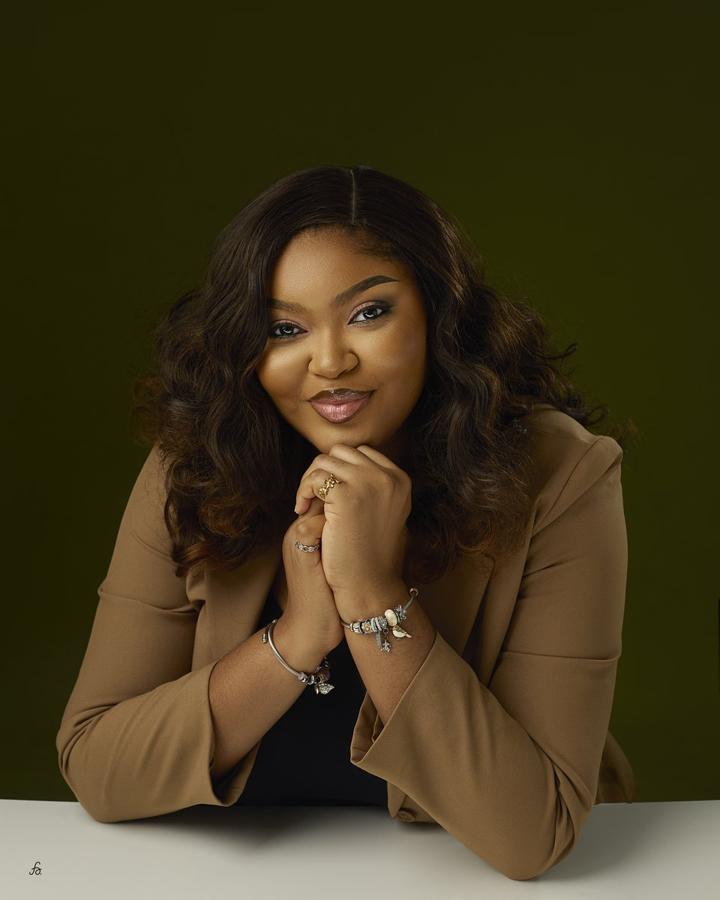

I’ve spent 7+ years writing and editing digital content. That experience shapes how I decide what should stay, what should be cut and what needs visual support before a carousel goes out.

When I work through a carousel, I notice when the hook is weak, when a slide is too cluttered, when the type will be difficult to read on a phone or when the visual choice is getting in the way of the idea.
I also pay attention to the person behind the content. If I am writing for you, I study how you already communicate so the finished carousel still sounds familiar to your audience.
Some of the questions I consider before I design:
My editorial background includes work across B2B SaaS, tech, fintech, health and lifestyle. I’ve written 1,000+ articles, edited 500+ pieces and designed 150+ carousels.
See my wider portfolioRetoldly focuses on carousel and visual thought-leadership work. Writerlize handles longer-form writing and ghostwriting when a client needs support beyond the visual side.
LinkedIn carousels, selected infographics and presentation-slide work.
Start a Retoldly projectGhostwriting and longer-form content support for leaders who need more than carousel production.
Visit Writerlize